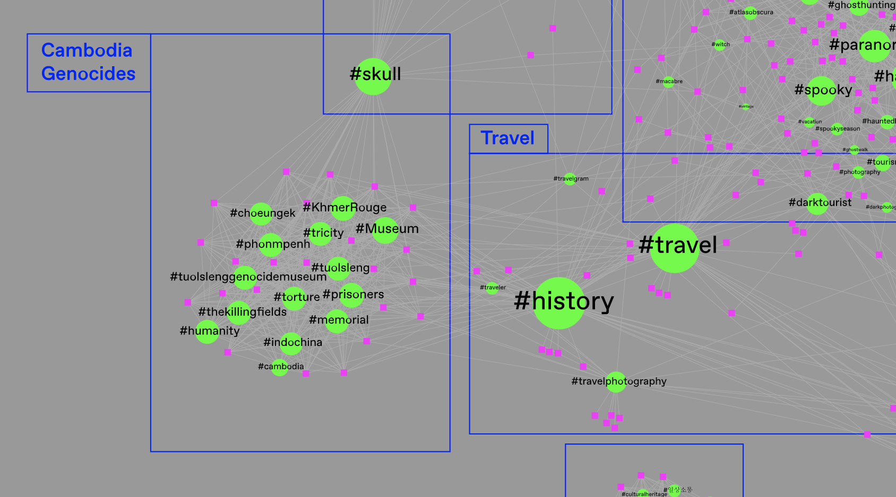
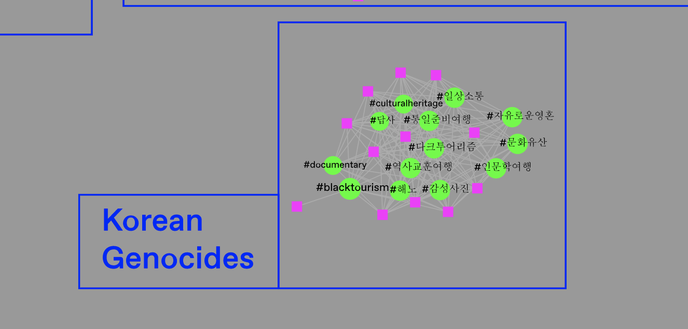
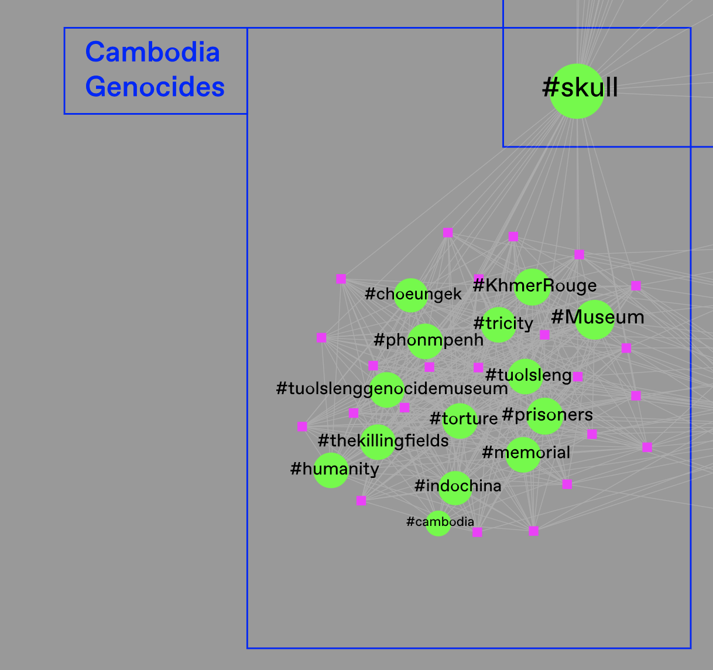

Firstly, a few singular hashtags related to the main hashtag (#darktourism) are bigger because they are used by the majority of posts. These are #halloween, #travel, #history, #chernobyl. By looking at these terms we can get a sense of how the #darktourism hashtag is used. This kind of tourism is bound to traveling and exploring a place because of its history of death, but it is also associated with fictional and paranormal activities, tying it to the creepy imaginary.
There are several semantic categories derived from the specific use of co-hashtags. The category is highlighted by the close relationship between co-hashtags.“Nuclear sites” is the category that contains the most used co-hashtags. This means that when looking for dark tourism the probability of encountering an image that concerns Nuclear Sites is very high.

Some of the hashtags do not come from English speaking countries: the most present languages after English are Spanish and Korean. In Spanish the hashtag is directly translated into the language and its represented by the words “tursimo” (tourism) and “negro” (black, dark). In Korean, words associated to the imagery like “다크투어리즘 ” and “문화유산” are used to express respectively “dark tourism” and “cultural heritage”.
Dark tourism is liked to travel and places where death is the common denominator. We would have expected to find places like Auschwitz-Birkenau, Ground Zero, Hiroshima & Nagasaki etc. However the most recurring historical moments linked to dark tourism on Instagram are the Cambodian Genocide and the Chernobyl disaster.
